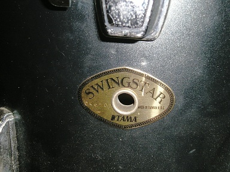
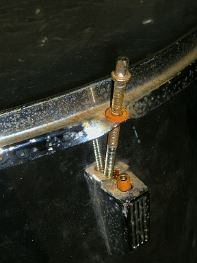
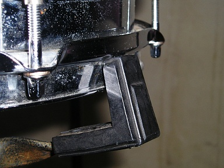
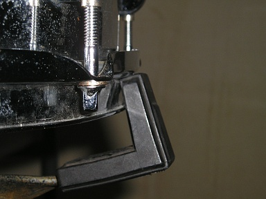

くどいようですが、ここはドラム関連サイトではありません。4 月も終ればドラムネタは落ち着くでしょう。
メンバーの健康状態がかんばしくなく、今日のリハも中止になってしまいました。4 月に間に合うのか不安ですが健康でないと音楽はできません。ダメだったらダメでそれでいいのだと自分は思います。そもそも、あくまで私はサポート・メンバーですし。
リハはできませんでしたが、逆境を利用してセットのチューニングをしてきました。災い転じて福となすです。
それとついでに例のブツの写真を少しばかり撮ってきました。
セットですが TAMA の Swingstar だということが判明しました。TAMA のサイトでみると廉価版にせよ綺麗なセットです。今使っているセットが同じものだとは思えません。
下の写真はタムの一部です。エンブレムの上にタムブラケットが、そして画面左下にラグの一部が映っています。ブラケットやラグの表面に白いプツプツが見えますが、錆でメッキが浮いてしまっているためにこうなっています。
さらに下の写真をみると、この楽器がどれくらい傷んでいるのかがわかると思います。映っているのはドラマーならすぐにわかると思いますが、フロアタムに取り付けられたフープとチューニング・ボルト、ラグです。ちなみに写真はボトム側です。
フープ、チューニング・ボルト、ラグ、ラグナット、チューニング・ボルトのナットが錆で赤茶けています。これをメンテナンスする人間はどこにもいません。メンテナンスの必要性を理解しているのは、恐ろしいことにおそらく私だけです。しかしメンテナンスを求めても拒絶されるでしょう。シンバルを磨くだけのことすら、そこでは拒絶されるのですから。
それと 10 inch の Tom のボトム側のヘッドとフープが見当たらないので、不可解に思いながらもこのセットではそうなのだろうと思っていたのですが、メーカーのサイトで確認したところ、やはりどこかの馬鹿野郎が外して紛失したようです。これじゃぁ 10 inch Tom 鳴らねーじゃん！！
シェルだけはすごく綺麗でした。ウッド・シェルだったのが幸いだったようです。ちなみに材はポプラです。
あとヘッドですが、すべてボコボコにへこんでいます。スティックのチップの形をしたへこみがいたるところにあります。ヘッドをまるで手締めしただけかと思うくらいにゆるゆるにして、音量を出すためにおもいっきり力任せに叩いていたのでしょう。まともな音が出るはずがないのに。
スネアのヘッドも外してみると、バターサイドは中央部がたるーんとへこんでいます。もっと早くに交換しろよと思わなくもないのですが、まぁこれはよく見かけることなので肩を落しながら仕方がないと思える範囲です。
が、スネアサイドのヘッドに打痕があるのはなぜなんでしょうか。打痕といってもスティックのニスの痕とか生やさしいものじゃぁありません。スティックのチップ型のへこみがもろについてます。スネアサイドのヘッドを叩くなよ！！破れるじゃん！！素人かよ！！
あとスナッピーも伸びてしまってだめになってしまっていました。まぁ、これも寿命と思えなくもありません。交換したいのですが、メンテナンスすら許されていない楽器なのでどうしようもありません。
まぁ、そんなひどい状態の楽器ですが、できるだけのことはやろうとチューニングだけはしっかりとやってきました。おかげでそれなりにちゃんと鳴ってくれるようになりました。鳴ってくれるようになったような気がします。
実際にはヘッドがぼろぼろなのでまともな音のはずがありませんが、ヘッドにテンションが加わった分ましになったような気がします。もちろんちゃんと鳴ったように錯覚してるだけというのはわかっています。ましになったと思わせてください。とりあえず頑張ったかいがあった……と信じたい……まじに信じたい。
しかし、あのヘッドを意味なくゆるゆるにするのは、本当に勘弁してください。音も楽器も死にます。
それと先月某ドラム・テックさんの技をパクってスネアを快音にしたと書きました。具体的にどうしたのかというと下の写真のようにしました。
 フープの段差を利用して、スネアをスタンドのアームの先端に乗せるようにするんです。もちろん実際には少し締めてます。
このようにセッティングすることで、スタンドのバスケットとスネアが接する面積が減って、スネアの鳴りが最大限引き出されます。サスティーンは伸びますし、クローズドリムショットの鳴りも明かによくなります。
このセッティングですが、TAMA と YAMAHA のフープではできることが確認済みです。私の Pearl のメイちゃん ( メイプル・シェルだから ) のフープは TAMA や YAMAHA のフープほど段差がくっきりとついていません。なめらかなカーブを描いています。もしかするとこのセッティングはできないかも、と思っていたのですが、できることを今日確認してきました。
あぁ、それともうひとつ信じられない光景を目にしてきました。某所のスタッフがビーターシャフトをわしづかみにして、ペダルをぶらぶらさせながら運んでいました。「何その楽器の扱い！？ゴミか何かと思ってんの！？」とその場で固まってしまいました。やっぱり素人に楽器をさわらせてはいかんですね。
とりあえずポプラをシェルに使っているこの可哀想なドラムセットのことを、今日から自分はポプラちゃんと呼んでやろうと思います。ゴミのように扱われて満身創痍な可哀想なこの子を、自分だけでもよしよししてやります。